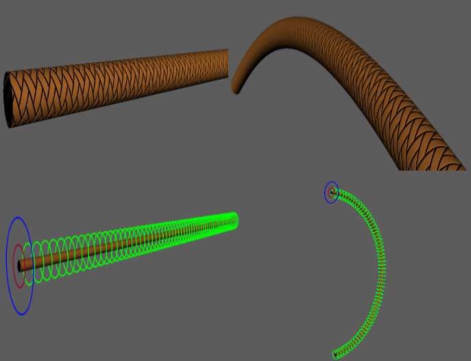
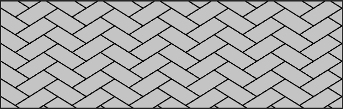
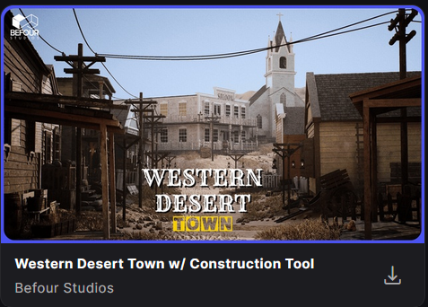
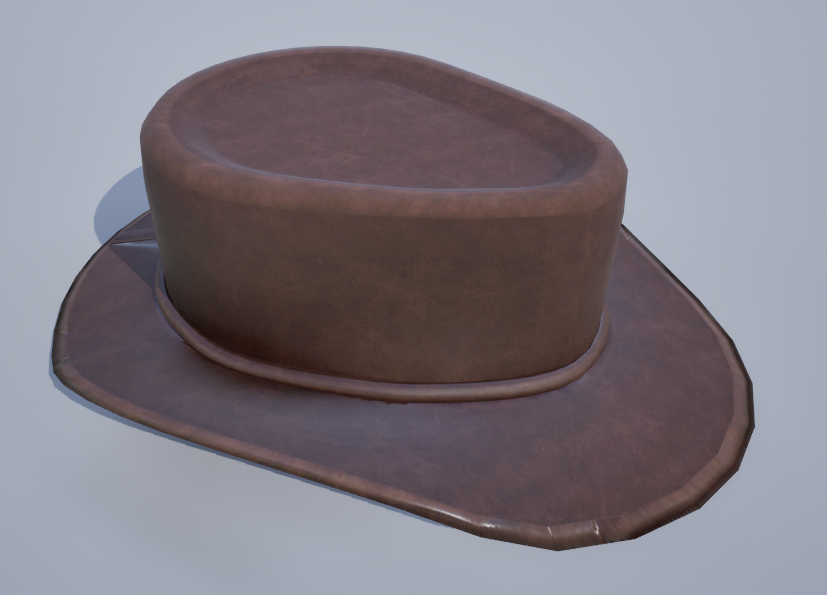
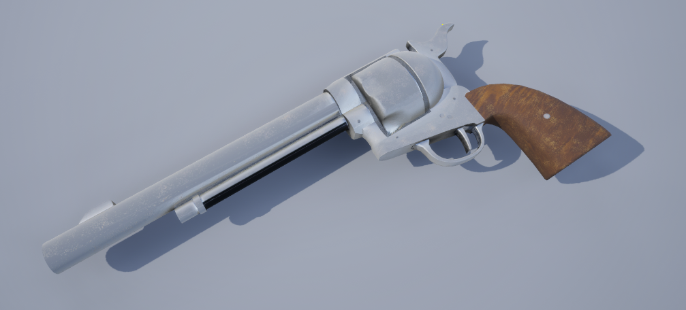
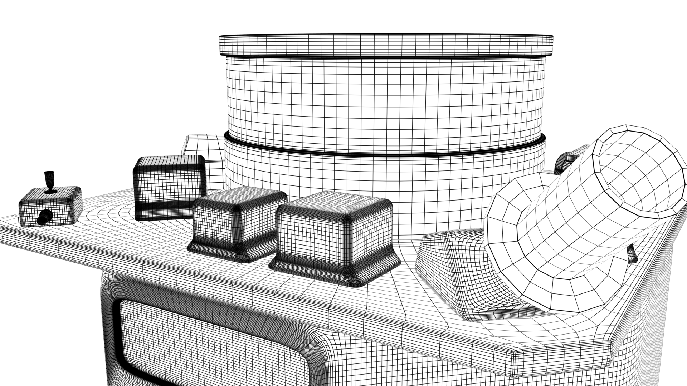

Le résultat obtenu dans Maya présente un tuyau tressé auquel le matériau apporte un relief visuel réaliste, tout en permettant de modifier facilement son apparence selon les besoins du projet. Une fois le matériau finalisé, j'ai réalisé le rig du tuyau afin de pouvoir le manipuler et le déformer selon différentes positions. Une attention particulière a été portée à la gestion des UV et de la texture, pour préserver autant que possible la régularité du motif tressé lors des flexions. Le résultat est ainsi un tuyau facilement manipulable, tout en conservant un rendu visuel propre et cohérent.

Cette mise en page associe un texte descriptif à une image. Elle convient notamment pour expliquer une étape de conception, présenter un modèle 3D ou détailler un choix artistique.
Le texte peut être plus ou moins long selon le contenu du projet.

Ce projet, réalisé sur une période de six semaines, avait pour objectif de moderniser d'anciennes scènes 3D de satellites utilisées par l'entreprise pour la production et la commercialisation d'images de synthèse. Créés plusieurs années auparavant, ces modèles nécessitaient une mise à jour afin de répondre aux exigences actuelles en matière de qualité visuelle et technique.
La mission qui m'a été confiée portait sur la modélisation et le texturing de différents éléments (props), ainsi que sur l'amélioration des modèles de satellites existants.
Pour enrichir mon environnement, j'ai utilisé un pack 3D provenant de Fab, représentant une ville désertique inspirée des décors de western. Cette ressource m'a permis de disposer de différents éléments architecturaux pour construire la ruelle principale de ma scène.
J'ai intégré ces éléments à mon propre environnement sous Unreal Engine, en les associant aux décors extérieurs que j'avais créés afin d'obtenir une scène cohérente avec l'ambiance recherchée.


Afin de renforcer l'identité western de mon projet, j'ai choisi de modéliser un chapeau de cow-boy. J'ai réalisé sa géométrie en tenant compte de sa silhouette caractéristique, notamment sa calotte et ses bords relevés.
Une fois la modélisation terminée, j'ai réalisé son texturing afin de lui donner une apparence adaptée à l'univers désertique de la scène. Ce modèle a ainsi été conçu pour s'intégrer naturellement à l'ambiance visuelle du projet.
Le second modèle que j'ai réalisé est un pistolet inspiré de l'univers du Far West. J'ai travaillé sur sa modélisation afin de reproduire les principales formes de l'arme et de distinguer ses différents éléments.
J'ai ensuite réalisé son texturing pour apporter davantage de détails visuels et renforcer son intégration dans l'univers du projet. Ce modèle complète ainsi les accessoires associés à l'ambiance western que je souhaitais créer.

La narration suit un personnage en vue à la première personne, qui arrive dans une ruelle au milieu d'une ville désertique. Il prend le temps d'observer les bâtiments qui l'entourent, avant de succomber à la chaleur et au manque d'eau.
Le personnage perd alors connaissance et sombre dans l'obscurité. Il reprend brièvement ses esprits et aperçoit ses affaires, mais son état de faiblesse le conduit finalement à perdre à nouveau connaissance. Les changements de luminosité et les effets visuels accompagnent ces transitions afin de retranscrire son épuisement et de renforcer l'immersion dans la scène.

Présentation de la première version du modèle.
Nouvelle Version
Présentation de la première version du modèle.
Une vidéo peut présenter une animation, une démonstration en temps réel ou un aperçu du résultat final.
Cette disposition permet de comparer deux animations, deux versions d’un modèle ou deux étapes d’une simulation.
Version 2